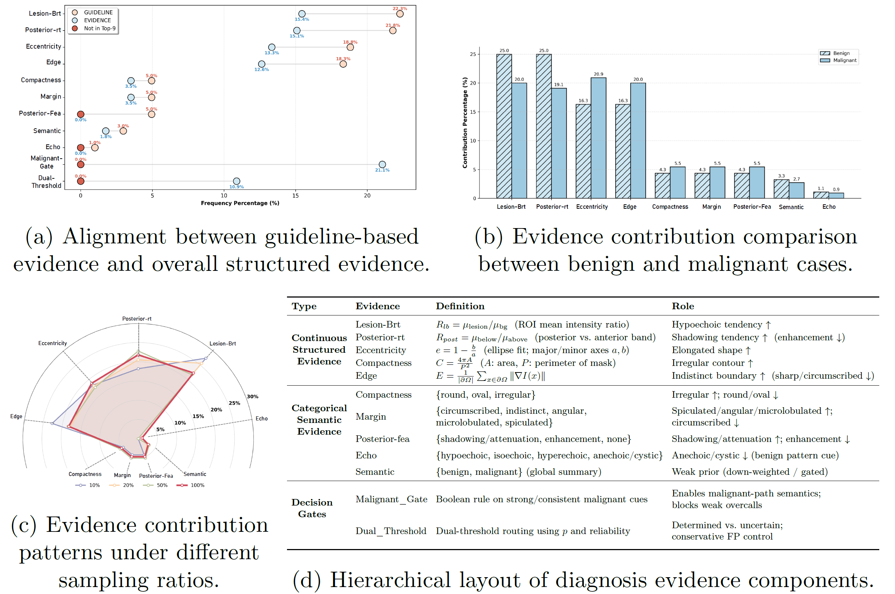
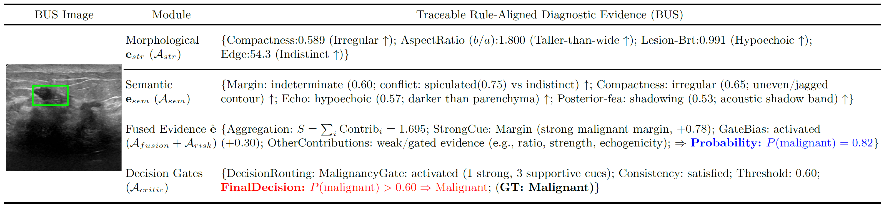

MICCAI 2026 Manuscript
RACA: Rule-Aligned Collaborative Agents for Evidence-Grounded Breast Ultrasound Classification
A rule-aligned multi-agent framework for transparent and clinically grounded breast ultrasound diagnosis.
* Equal contribution † Co-corresponding authors

Highlights
- Rule-aligned diagnosis: RACA anchors breast ultrasound (BUS) classification to standardized clinical descriptors such as shape, margin, echogenicity, and posterior features.
- Collaborative agents: The framework decomposes diagnosis into evidence-grounded perception, rule-aligned risk modeling, and critic-guided decision calibration.
- Traceable evidence chain: Each prediction is supported by auditable diagnostic evidence, consistency checks, malignancy risk estimates, and prior-case retrieval.
- Memory-guided calibration: A critic agent retrieves similar prior cases and selectively refines uncertain predictions under reliability constraints.
- Strong empirical performance: RACA improves overall classification performance across BUSI, BUV, and BUSBRA benchmarks while preserving clinically interpretable decision patterns.
Abstract
Breast cancer is highly prevalent worldwide. While breast ultrasound (BUS) serves as a primary screening modality, its reliable diagnostic interpretation remains inherently challenging. Most existing BUS classification methods prioritize direct image-to-label mapping and overall accuracy, neglecting the alignment with clinical diagnostic rules and decision traceability. Such limitations hinder their integration into rule-governed clinical workflows and diminish the trustworthiness of automated diagnostic decisions.
Although agent-based frameworks offer a modular paradigm for organizing complex decision processes, their potential for rule-aligned and fully traceable BUS diagnosis remains largely unexplored. To address these challenges, we introduce RACA, a Rule-Aligned Collaborative Agent framework for evidence-grounded BUS classification. Our RACA introduces a novel, three-stage framework driven by explicit clinical rules.
First, a perception module consolidates morphological and semantic evidence into structured diagnostic evidence. Then, a risk modeling agent aggregates the evidence under explicit clinical constraints to derive a rule-aligned risk estimate and an initial prediction. Finally, a critic-guided calibration agent refines predictions through memory-based retrieval.
Extensive experiments on three BUS benchmarks demonstrate the superiority of RACA over representative classification and medical agent-based frameworks. Comprehensive interpretability analyses and case demonstrations validate that its traceable decision pathway aligns with clinical diagnosis.
Method Overview
As demonstrated in Fig. 1, given a BUS image, RACA formulates the diagnosis as a structured, three-stage decision process governed by standardized clinical rules. Stage I extracts clinically meaningful imaging evidence to form structured diagnostic evidence. Perception agents Astr, Asem, and Afusion extract structural and semantic evidence from the image and produce fused diagnostic evidence. Stage II performs risk modeling. A rule-aligned risk modeling agent Arisk maps the fused evidence to an initial malignancy risk and an initial prediction. Stage III conducts decision calibration. A critic-guided decision calibration agent Acritic retrieves top-k prior cases to estimate a memory-based malignancy risk, which refines the initial prediction and generates the final prediction through selective calibration.
Experimental Setup
Datasets
RACA is evaluated on three public breast ultrasound datasets: BUSI, BUV, and BUSBRA. All methods use the same 7:2:1 train/validation/test split for fair comparison.
- BUSI [1]
- BUV [15]
- BUSBRA [5]
Dataset references
[1] Al-Dhabyani, W., Gomaa, M., Khaled, H., Fahmy, A. Dataset of breast ultrasound images. Data in Brief, 28:104863, 2020.
[15] Lin, Z., Lin, J., Zhu, L., Fu, H., Qin, J., Wang, L. A new dataset and a baseline model for breast lesion detection in ultrasound videos. In MICCAI, pp. 614-623, 2022.
[5] Gomez-Flores, W., Gregorio-Calas, M. J., Coelho de Albuquerque Pereira, W. BUS-BRA: A breast ultrasound dataset for assessing computer-aided diagnosis systems. Medical Physics, 51(4):3110-3123, 2024.
Implementation Details
We use Auto-GPT [23] to build our agent framework. The calibration Ak-plug employs an EfficientNet [26] pretrained on BUSC [21], which is independent of the target datasets, ensuring no data leakage. Each dataset is randomly divided into training, validation, and test sets with a 7:2:1 ratio.
RACA uses the validation split exclusively for hyperparameter selection and memory construction, while all baselines adopt identical data splits for fair comparison. Runtime is 31.40 s/image on one RTX 4090 24GB GPU, with most latency from the VLM component (31.38 s/image).
Implementation references
[23] Significant Gravitas. AutoGPT, 2023. Project page.
[26] Tan, M., Le, Q. EfficientNet: Rethinking model scaling for convolutional neural networks. In ICML, pp. 6105-6114, 2019.
[21] Rodrigues, P. S. Breast ultrasound image. Mendeley Data, 2017.
Results
BUS classification performance is evaluated by standard metrics: Accuracy (ACC), Precision (PRE), Recall (REC), and F1-score (F1).
Comparison Results
We compare RACA against representative fully supervised methods (LKA and DiffMICv2), semi-supervised methods (OPENSSC and PEAT), and general medical agent frameworks (Medagents and MDAgents) across the three datasets. Table 1 shows that RACA achieves superior overall performance. Compared with the strongest fully supervised baselines, RACA obtains substantial accuracy improvements, indicating that explicit rule-aligned decision modeling improves precision over conventional implicit feature learning. Against semi-supervised methods, RACA maintains a more balanced precision-recall trade-off. Crucially, RACA outperforms general medical agents by margins exceeding 19% in accuracy, demonstrating the necessity of explicitly integrating domain-specific diagnostic rules.
| Category | Method | BUSI | BUV | BUSBRA | |||||||||
|---|---|---|---|---|---|---|---|---|---|---|---|---|---|
| ACC | PRE | REC | F1 | ACC | PRE | REC | F1 | ACC | PRE | REC | F1 | ||
| Fully-supervised | LKA [32] | 0.7353 | 0.6765 | 0.7667 | 0.7188 | 0.7647 | 0.7500 | 0.5000 | 0.6000 | 0.7979 | 0.7447 | 0.5738 | 0.6481 |
| Fully-supervised | DiffMICv2 [30] | 0.7500 | 0.7485 | 0.7518 | 0.7486 | 0.7647 | 0.7596 | 0.7045 | 0.7167 | 0.7606 | 0.7419 | 0.6780 | 0.6915 |
| Semi-supervised | OPENSSC [7] | 0.7206 | 0.7540 | 0.7395 | 0.7191 | 0.7059 | 0.8438 | 0.5833 | 0.5503 | 0.7394 | 0.7188 | 0.6410 | 0.6500 |
| Semi-supervised | PEAT [31] | 0.6765 | 0.7381 | 0.6404 | 0.6211 | 0.6471 | 0.3235 | 0.5000 | 0.3929 | 0.7447 | 0.7512 | 0.6321 | 0.6382 |
| Medical agent-based | Medagents [27] | 0.6119 | 0.6423 | 0.6297 | 0.6077 | 0.5294 | 0.5208 | 0.5227 | 0.5143 | 0.5260 | 0.5271 | 0.5312 | 0.5103 |
| Medical agent-based | MDAgents [12] | 0.5588 | 0.5000 | 0.8000 | 0.6154 | 0.7059 | 0.6000 | 0.5000 | 0.5455 | 0.6330 | 0.4524 | 0.6230 | 0.5241 |
| Ours | RACA | 0.8088 | 0.7742 | 0.8000 | 0.7869 | 0.8235 | 0.7143 | 0.8333 | 0.7692 | 0.8085 | 0.7273 | 0.6557 | 0.6897 |
RACA shows the strongest overall accuracy across all three datasets and achieves large gains over general medical agent baselines, highlighting the importance of explicitly encoding domain-specific diagnostic rules.
Comparison baseline references
[32] Zhu, Z., Lu, S. Y., Huang, T., Liu, L., Liu, Z. LKA: Large Kernel Adapter for enhanced medical image classification. In MICCAI, pp. 394-404, 2025.
[30] Yang, Y., Fu, H., Aviles-Rivero, A. I., Xing, Z., Zhu, L. DiffMIC-v2: Medical image classification via improved diffusion network. IEEE Transactions on Medical Imaging, 44(5):2244-2255, 2025.
[7] He, A., Li, T., Zhao, Y., Zhao, J., Fu, H. Open-set semi-supervised medical image classification with learnable prototypes and outlier filter. In MICCAI, pp. 492-501, 2024.
[31] Zeng, Q., Xie, Y., Lu, Z., Xia, Y. PEFAT: Boosting semi-supervised medical image classification via pseudo-loss estimation and feature adversarial training. In CVPR, pp. 15671-15680, 2023.
[27] Tang, X., Zou, A., Zhang, Z., Li, Z., Zhao, Y., Zhang, X., Cohan, A., Gerstein, M. MedAgents: Large language models as collaborators for zero-shot medical reasoning. In Findings of ACL, pp. 599-621, 2024.
[12] Kim, Y., Park, C., Jeong, H., Chan, Y. S., Xu, X., McDuff, D., Lee, H., Ghassemi, M., Breazeal, C., Park, H. W. MDAgents: An adaptive collaboration of LLMs for medical decision-making. NeurIPS, 37:79410-79452, 2024.
Ablation Study
We evaluate the contribution of each component in RACA on the BUSI and BUSBRA datasets. In Table 2, while the baseline (EGP + Arisk) establishes an evidence-grounded and rule-aligned foundation, sequentially integrating multiple calibration agents (Ak-top, Ak-thre, and Ak-plug) achieves substantial, step-wise performance gains. This steady upward trajectory validates our core design philosophy: decision calibration with prior-case retrieval acts as a powerful, structured enhancement of rule-based inference rather than a replacement.
| EGP | Arisk | Ak-top | Ak-thre | Ak-plug | BUSI | BUSBRA | ||||||
|---|---|---|---|---|---|---|---|---|---|---|---|---|
| ACC | PRE | REC | F1 | ACC | PRE | REC | F1 | |||||
| ✓ | ✓ | 0.6176 | 0.5909 | 0.4333 | 0.5000 | 0.5212 | 0.3164 | 0.4098 | 0.3571 | |||
| ✓ | ✓ | ✓ | 0.7054 | 0.6744 | 0.6042 | 0.6374 | 0.6223 | 0.4151 | 0.3607 | 0.3860 | ||
| ✓ | ✓ | ✓ | ✓ | 0.7941 | 0.7667 | 0.7667 | 0.7667 | 0.7713 | 0.7647 | 0.4262 | 0.5474 | |
| ✓ | ✓ | ✓ | ✓ | ✓ | 0.8088 | 0.7742 | 0.8000 | 0.7869 | 0.8085 | 0.7273 | 0.6557 | 0.6897 |
Diagnostic Interpretability
Moving beyond overall classification accuracy, we further assess whether the proposed RACA forms a stable, traceable, and clinically consistent decision-making process. We conduct a systematic experimental analysis of the structured feature representations within the evidence acquired by RACA. Specifically, we investigate the relationship between established BI-RADS guideline-based features and the explicit diagnostic evidence constructed by RACA.
For each sample, we compute the normalized frequency of each feature within the top-9 ranked evidence, which reflects its relative contribution to the final decision-making process. Fig. 2(a) shows that the distribution of guideline-based evidence tightly aligns with the overall structured evidence, demonstrating that RACA strictly preserves clinical rules while robustly expanding its representational capacity to capture subtle diagnostic evidence. Fig. 2(b) shows a stark contrast: malignant predictions are heavily driven by invasive morphological features, such as eccentricity and edge, whereas benign predictions rely predominantly on acoustic intensity evidence, such as lesion brightness and posterior ratio, proving that the model naturally replicates real-world clinical diagnosis.

Case Demonstration
To explicitly demonstrate the diagnostic traceability of RACA, we show the inference process using a randomly selected test sample. Fig. 3 presents the step-by-step intermediate output of each stage. In Stage I, quantitative morphological measurements and VLM-derived semantic descriptions are converted into clinically aligned diagnostic evidence. In Stage II, the fused evidence is mapped to attribute-wise contributions and aggregated into a malignancy risk estimate. In Stage III, the critic-guided calibration agent verifies rule consistency, confirms malignancy gate activation, and routes the final decision according to the calibrated risk and rule-level evidence.

BibTeX
@misc{chen2026raca,
title = {RACA: Rule-Aligned Collaborative Agents for Evidence-Grounded Breast Ultrasound Classification},
author = {Chen, Lingyu and Wang, Yue and Li, Cheng and Jin, Lin and Zhang, Daoqiang and Liao, Hongen and Chen, Fang and Meng, Qingjie},
year = {2026},
note = {Manuscript}
}